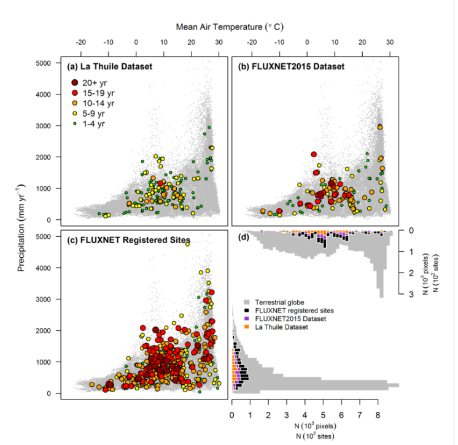

Home / About / About KoFlux
About the KoFlux Network
KoFlux is an international "network of networks," tying together regional networks of earth system scientists. KoFlux scientists use the eddy covariance technique to measure the cycling of carbon, water, and energy between the biosphere and atmosphere. Scientists use these data to better understand ecosystem functioning, trace gas dynamics, and air pollution.
Eddy covariance is the standard method that ecosystem scientists use to measure trace gas fluxes between ecosystems and the atmosphere. A key benefit of the eddy covariance method is its ability to measure fluxes directly (in situ), without disturbing the ecosystem. Gas exchanges of carbon dioxide, methane, water vapor, and more are measured at each individual site. Some eddy covariance sites have been collecting data for several decades, providing opportunities to study how ecosystems are changing over time.
Researchers working within regional networks process and analyze eddy covariance data, and then offer their data through regional network data portals. KoFlux links these regional networks together, collecting their datasets to create processed and harmonized eddy covariance data products.
The most recent KoFlux product, KoFlux2025, is hosted by the Seoul National University (SNU) and is publicly available for download. Currently there are over 1000 active and historic flux measurement sites, dispersed across most climate spaces and representative biomes.
The KoFlux website offers documentation and support to KoFlux data users, and tools that enable idea sharing and engaging with the KoFlux community. KoFlux is one of the largest ecosystem networks in the world. The high level of collaboration among KoFlux scientists ensures the robustness of data, and optimizes the usefulness of this resource.
